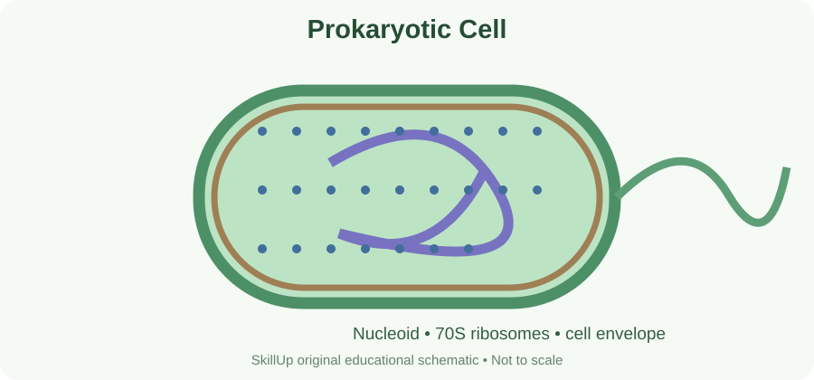

Schleiden and Schwann
Plants and animals are composed of cells.
Cell theory states that organisms consist of cells, cells are basic structural and functional units, and new cells arise from existing cells.
Plants and animals are composed of cells.
New cells arise from pre-existing cells.
Viruses are acellular and reproduce only inside host cells.

Schleiden and Schwann · Virchow · Exception
Schleiden and Schwann.
Every cell comes from a pre-existing cell.
No, they are acellular.
Prokaryotes lack a membrane-bound nucleus and membrane-bound organelles. Their DNA lies in a nucleoid region.
Genetic material is not surrounded by a nuclear envelope.
Cytoplasmic ribosomes consist of 50S and 30S subunits.
Many bacteria have a peptidoglycan wall, while Mycoplasma lacks a wall.

Nucleoid · 70S ribosomes · Cell envelope
Nucleoid.
70S.
Mycoplasma.
Eukaryotic cells possess a membrane-bound nucleus and specialized membrane-bound organelles.
Chromosomes lie inside a nuclear envelope with pores.
Mitochondria, ER and Golgi apparatus perform distinct functions.
Cytoplasmic ribosomes are generally 80S; organelles may contain 70S-type ribosomes.

Nucleus · Organelles · Ribosomes
Nuclear envelope.
Mitochondrion.
80S.